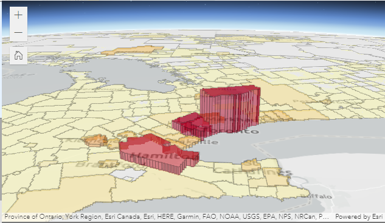

This was created by taking data from the ArcGIS Living Atlas of Ontario and then symbolizing it differently by using 2 fields instead of 1. We used the "total ballots cast" and the "party won" fields to better represent the data based on population instead of area.
We created this by getting our data from Open Canada/Canadian government and geo-referencing the data to locate it on ArcGIS Pro. Once the dashboard was created we added an indicator, a gauge, a list, and a pie graph. we then made sure it changed off of zoom and/or select. This made it easy for people to see exact information from exact electoral districts. Once the dashboard was created we added an indicator, a gauge, a list, and a pie graph. we then made sure it changed off of zoom and/or select. This made it easy for people to see exact information from exact electoral districts.
We created this by using experience builder. We used a mix of Canadian census population data and electoral districts' total area in Canada. We then used two 2D maps which showed the difference between area and population based on color where the darker the color the higher the population/area. We then added two 3D maps to show the same data but with a visual representation of height (example below).
Durran, D. R. (2019, July 8). Whose votes count the least in the Electoral College? The Conversation. https://theconversation.com/whose-votes-count-the-least-in-the-electoral-college-74280
Giardino, D. (2020, October 30). The Problem With Election Maps. The Startup. https://medium.com/swlh/the-problem-with-election-maps-443b3a941dc7
 The Bax Creek Boys
The Bax Creek Boys